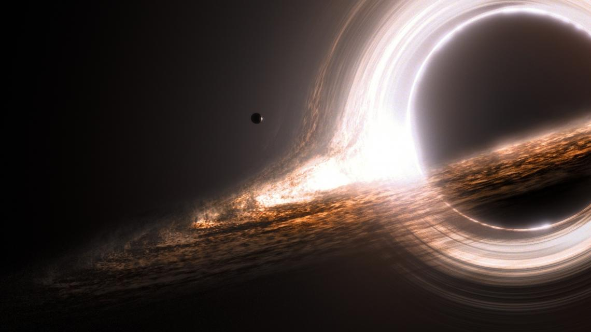

Definíció
A fekete lyuk a téridő olyan tartománya, ahonnan az erős gravitáció miatt semmi, még a fény sem tud távozni. Félklasszikus szemléltetése szerint olyan égitest, amelynél a felszínre vonatkoztatott szökési sebesség eléri vagy meghaladja a fénysebesség értékét.[1] Azonban a fekete lyukban - az eseményhorizont mögött - nincs valódi égitest: a fekete lyuknak nincs belső szerkezete, kifelé pedig csak a tömege, töltése és perdülete nyilvánul meg (kopaszsági elv). Létezésüket az általános relativitáselmélet támasztja alá.
Keletkezésük
Fekete lyuk keletkezik akkor, ha egy véges tömeg a gravitációs összeomlásnak nevezett folyamat során egy kritikus értéknél kisebb térfogatba tömörül össze. Ekkor az anyag összehúzódását okozó gravitációs erő minden más anyagi erőnél nagyobb lesz, s az anyag egyetlen pontba húzódik össze. Ebben a pontban egyes kutatók szerint bizonyos fizikai mennyiségek (sűrűség, téridőgörbület) végtelenné válnak (lásd: gravitációs szingularitás ).
Szingularitás
A szingularitást körülvevő térrészben a gravitáció olyan erős, hogy onnan sem anyag, sem fény nem szabadulhat ki. E térrész határfelülete az eseményhorizont, sugara az ún. Schwarzschild-sugár. Az eseményhorizonton belülre kerülő anyag vagy sugárzás belezuhan a szingularitásba. A fekete lyukak létezése mind elméletileg, mind csillagászati megfigyelésekkel jól alátámasztott (például Chandra űrtávcső). A lyuk elnevezés alatt nem a szokásos értelemben vett lyukat kell érteni, inkább a világűr egy részét, ami mindent elnyel, és ahonnan semmi nem tud visszatérni. Másképpen, a fekete lyuk olyan égitest, mely nagy tömege ellenére elég kicsi, hogy elférjen az általa létrehozott eseményhorizonton belül. Ebben az esetben ugyanis az égitest minden pontja az eseményhorizonton belül van, tehát az eseményhorizonton kívülről nem látható. Nagyobb fekete lyuk sűrűsége kisebb lehet, mint a vízé vagy a levegőé.